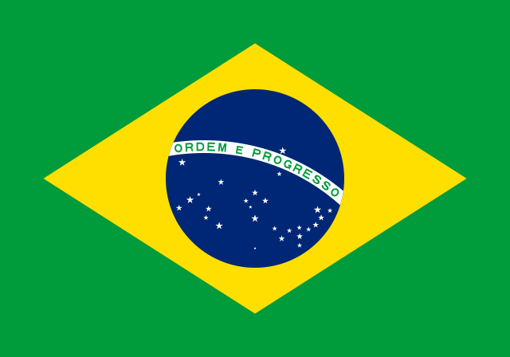

Katzhin Comunity Hook
Game katzhin comunity hook ini masih masa percobaan dan kalian bisa langsung kontek dev kami untuk update terbaru
Game itu bisa kalian mainkan di saat gabut kalian juga bisa request karakternya untuk update penambahan karakternya jadi makin lebih seru jadi di setiap levelnya terdapat rintangan yang harus kalian tuntaskan dan kalian harus menyelesaikanya untuk mendapatkan karakter yang terkunci pada level tersebut untuk level nya dev kami membuat lv rintangan yang sangat banyak untuk kalian tuntaskan jadi tunggu apa lagi tuntaskan seluruh karakter nya untuk kalian coba
Pertanyaan Pengguna
banyak pertanyaan di game kami yang siap menuju tester dan pengembangan game katzhin comunity hook jadi makin seru nih !!
Jordan Smith
apakah kami bisa mendapatkan testernya jga agar bisa request ?
development Game Katzhin Comunity Hook 
Tentu saja bisa kalian bisa mendapatkan tester hanya cukup menghubungi dev kami untuk mendapatkan top tester sesuai request kalian jadi makin seru kalian mainya dengan karakter yang kalian pakai pada game katzhin comunity hook.
Michele .svg)
apakah saya bisa masuk comunity tersebut agar saya mengetahui banyak hal ?
development Game Katzhin Comunity Hook
Tentu saja bisa Kalian bisa Join di Game kami Tanpa harus tester Percobaan Masuk kalian Juga akan di Ajarkan Seputar Pembuatan game Dari Game 2D Hingga Sampai Game 3D kalian juga akan mengenal VIsual Studio Games, Unity, Dan Unriel Engine 5 Dan Generasi Yang sudah jadi Akan kami tampilkan di Katzhin Comunity Hook Jadi Tunggu apa lagi ges Masuk Comunity Sekarang.
Alisa Smith
apakah saya Bisa mengikuti kursus pada dev katzhin saya akan membayar tagihan dana nya ?
development Game Katzhin Comunity Hook
Tentu saja bisa kalian bisa menikmatinya dan banyak belajar pada kami dan kami sangat sukarelawan untuk membantu kalian pada keluhan ini.
Arthur
saya sangat menyukai game yang kau buat dev dwi bakti n dev apakah saya bisa berkomunikasi bersama anda pasti itu menyenangkan ?
development Game Katzhin Comunity Hook
Tentu saja kalian bisa berkomunikasi dengan saya tanpa ragu saya akan membantu semuah kepada kalian tentang bagaimana cara pembuatan game dan step tutorialnya ini pasti akan seru nantinya.
Sahran 
Apakah ada game yang lainya dari ini untuk saya bermain dev katzhin ?
development Game Katzhin Comunity Hook
Tentu saja ada banyak game yang saya buat sekitar 10 games playfrom yang bisa kalian mainkan di game saya nantinya itu akan menyenangkan pasti.
Sarah Chan 
Aku suka dengan genre anime kenapa tidak buat game anime selain game tersebut pasti akan bagus ?
development Game Katzhin Comunity Hook
Tentu saja saya akan membuatnya tapi itu memakan waktu yang sangat lama saya akan berusaha untuk membuatnya demi kalian.
Gober
Game nya bagus dwi bakti n dev cuma kalo bisa buat game simulatornya biar seru ?
development Game Katzhin Comunity Hook
Tentu saja saya akan membuatnya tetapi akan membutuhkan waktu yang sangat lama saya akan berusaha demi kalian.
komenan dari pengguna
banyak sekali komenan dari mereka yang sangat positif
Khalifah
Saya sangat menyukai game yang kamu buat itu sangat seru buat saya mengisis waktu luang.
Arawhz
Game nya bagus banget dalam mengisi waktu luang saya.
Farhan
Tidak saya sangka game nya sangat menarik sekali hingga anak saya menyukainya.
Gober
Game nya bagus banget Dwi bakti N dev sangat membantu sekali dalam mengisi waktu luang.
Malik
Game nya Bagus saran saya tampilanya untuk di perbagus.
Novrian
Game nya bagus tapi blm saya coba lagi sama ayang dulu hehe.
Carlina Carless
Saya sangat suka game yang kamu buat cara pembuatanya sangat rapih cuma ada sedikit bug yang harus di perbaiki.
Elina
Game nya sangat menarik untuk mengisi waktu luang saya di jam kosong saat kerja cuma saya harap di kembangkan lagi dan di tambah karakternya kayanya masih kurang banyak jadi membuat bosan.
Santika 
game nya sangat bagus tapi masih banyak kekurangan tapi saya tetap suka game nya mengapa jikalau sound nya di taroh nya sebagai pop up saja biar ga halangin pemandangan saat bermain.
Ameliana 
saya suka betul game di orang buat ni sangat bermanfaat karna di orang ni membuat articel kembagi lah saya senang nihh.
Bimbingan dari guru berpotensi

pak icwan (Desain Grafis)
Game nya Bagus dwi kembangkan lagi jangan gampang menyerah dan ragu teruskan yang terbaik.

Pak Gilang (Editor)
Game nya bagus pisan kembangin terus dwi semoga jadi anak yang terbaik dalam bidang games.

Pak Afaan (Programmer)
Dwi sudah cakep Codinganya teruskan dan kebangkan lagi dwi jadilah pembuat game industri terbaik.

Pak Irfan Hilmy (Photograpy)
Aih Game Na alus gening pokokna anak didikan pak affan mantap pisan.

Pak Irfan Marbun (Desiner)
Game nya Bagus Banget Pesan saya kembangin lagi.
Pak Agus (Frame Animation)
Game nya Bagus Banget bapa bangga ama kamu ternyata ilmu yang bapa ajarkan tidak sia-sia.

Pak Aan (Design Grafis Percetakan)
saya melihatnya takjub dengan codingan yang kamu buat.

Pak Andika Surya (3D Modeling)
Game nya bagus dwi ilmu nya mantap sudah di kembangin.
Motivasi
Tumbuhkan nilai nilai semangat dalam dirimu jangan sampai padam akan yang kau rancang sendiri jadilah yang terbaik dari lebih yang terbaik itulah jadi hidup.
“menang bukan berarti kalah dan kalah bukan berarti menyerah jadilah seseorang yang terbaik lebih dari segalanya” — Katzhin Comunity Hook
Project Dwi Bakti N Dev dari waktu ke waktu

Jikalau kalian suka tentang game kami ayo beri komentar kepada dev kami dan kami telah menyediakan game DLC game vitur yang akan datang nantinya dan di kembangkan Oleh Dwi Bakti N Dev.
Terkait Informasi DLC Games
Game tersebut adalah game imagi yang bekeja sama oleh dwi bakti n dev dengan pengeluaran tak cukup banyak game tersebut menggunakan unity dan di up oleh dwi bakti n dev Grapict Hight Dengan Memakai Texture Yang sangat Baik.
Untuk bermainya cukup mudah di pahami kalian cukup gunakan data untuk download resource terlebih dahulu di latar belakang jadi tunggu apa lagi mainkan sekarang juga dari game buatan Dwi Bakti N Dev jangan lupa kalian klik foto imagi animations nya ya sahabat.😎😎
Brand Games Colleb Animations